베트남 항공전 이모저모
게시: 2021-04-15T06:30:34+09:00
<대공포가 더 낫다?> 베트남 전쟁 초기, 소련이 베트남에 SA-2 대공 미쓸을 지원해주었으나 미국은 혹시 소련 기술자가 죽기라도 하면 확전될까 두렵기도 하고 또 그것이 그냥 위협용일 뿐 실제로 가동은 못할 것이라고 생각해서 무시. 그러나 1965년 7월, F-4 팬텀기 1대가 SA-2에게 격추당하자 즉각 SA-2 기지에 대해 미군은 보복 공습. 그러나 이미 거긴 미사일 모형만 있었을 뿐 진짜 미사일 기지는 다른 곳으로 이동한 뒤. 대신 그 가짜 미사일 기지를 둘러싼 지역에 저고도 재래식 대공포가 잔뜩 배치되어 있었음. 미군기 무려 4대가 재래식 대공포에 맞아 떨어짐. 낙하산 탈출한 미군 조종사는 일단 숲 속에 숨은 뒤 무전으로 구조 요청. 베트남군은 그 위치를 잘 알면서도 일부러 놔둔 뒤 헬기 구조대가 오면 그걸 또 격추. 반복된 노력 끝에 미군이 포기하고 더 이상 안 오면 비로소 미군 조종사 줍줍. 이렇게 소련제 지대공 미쓸의 위협이 본격화 되자 미군은 대레이더 Shrike 미쓸로 무장된 F-105로 구성된 SAM 파괴 전문팀인 Wild Weasel 팀을 운용. 그 활약 덕분인지 1965~1968년 사이 처음에는 5.7%이던 북베트남군의 지대공 미쓸 명중률은 1% 미만으로 떨어졌음. 그러나 실제로는 점점 더 많은 미군기가 SAM에 맞아 격추되었는데, 이유는 북베트남군이 점점 더 많은 미쓸을 쏘아댔기 때문. 1967년 무려 3202기의 SA-2가 발사되어 56대의 미군기를 격추. 결국 비엣남 전에서 소련 SA-2 지대공미쓸의 명중률은 1% 정도로 매우 낮았고, 격추당한 미공군기의 83%는 재래식 대공포에 맞아 떨어짐. "그러니까 비싸고 비효율적인 지대공미쓸보다는 대공포를 많이 배치했어야"라는 분석이 나올 수 있으나, 재래식 대공포가 저렇게 많은 kill을 할 수 있었던 것은 지대공미쓸을 피하기 위해 미군기들이 저공비행을 했기 때문. * 사진은 비엣남에서 F-105 Thunderchief를 노리는 SA-2. 빗나가는 것처럼 보이지만 SA-2의 살상반경(kill radius)는 대략 65m로서 저 정도면 저 사진 속 기체가 생존했는지 여부를 알 수 없는 상태. 참고로 저 F-105의 길이가 대략 20m.
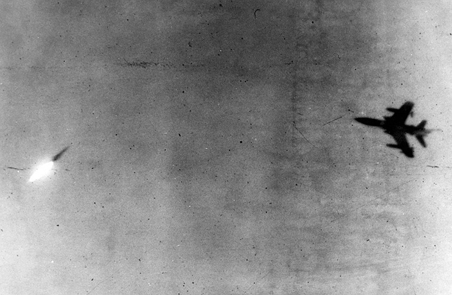 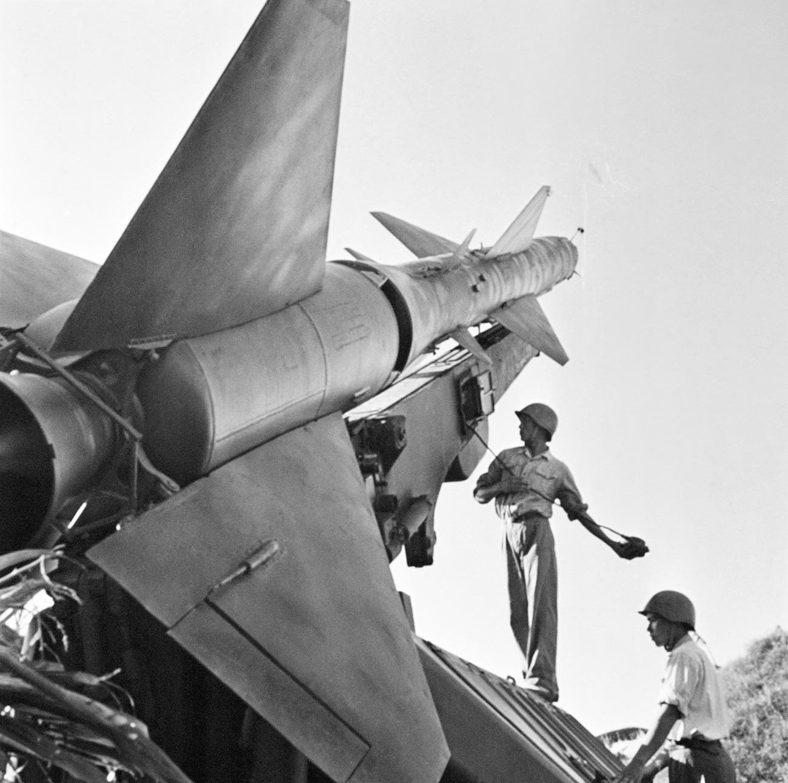
<왜 헬기를 버렸을까> 1975년 사이공 최후의 순간, 온갖 헬리콥터들이 다 안착한 USS Midway에 남베트남 공군의 세스나 정찰기 한대가 착함 시도. 테일후크도 없는 세스나기는 항모에 착함도 안되고 또 갑판에 헬기도 잔뜩 있는 터라 불허. 그래도 착함하려 하자 미드웨이는 착함 못하게 하려고 지그재그로 항진. 무전으로 "차라리 항모 옆 바다에 불시착해라, 헬기로 구조해주겠다"라고 알렸는데도 계속 항모에 착함을 시도했는데, 결국 갑판 위에 던진 손편지로 베트남군 조종사 소령이 전한 내용은 "헬기들을 치워달라, 와이프와 아이 다섯이 타고있다" 결국 헬기 치워주자 테일후크도 없는 세스나로 깔끔히 착륙. 이 세스나는 현재 펜사콜라의 해군 박물관에 전시 중. 아래 3번째 사진 많이들 봤을텐데 멀쩡한 헬기를 바다에 버리는 이유는 전에 올렸던 것처럼 와이프와 애 셋을 데리고 날아온 비엣남 공군 장교의 세스나기를 착함시키기 위해서. 미군은 돈이 많아서 헬기 몇대 따위 안 중요한가보다 싶겠으나 그렇지 않음. 미군도 격추된 헬기 다 다시 주워서 재활용 했음(4번째 사진).
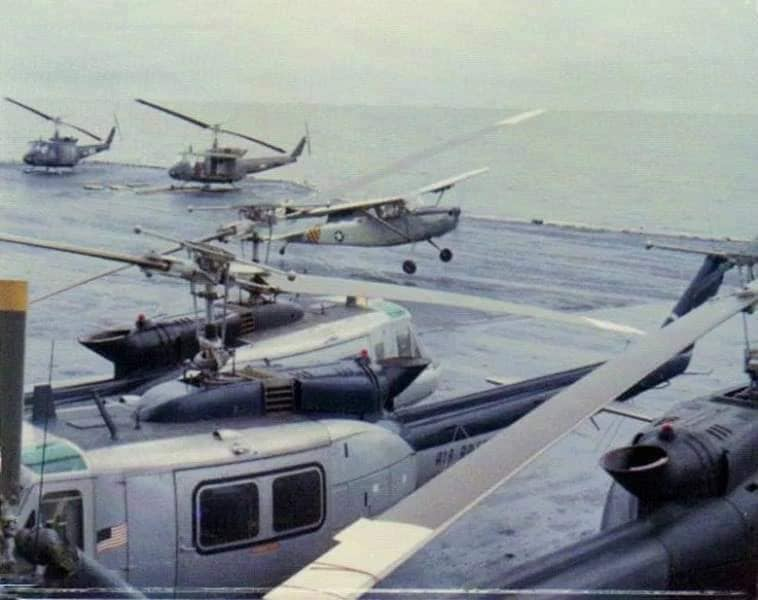 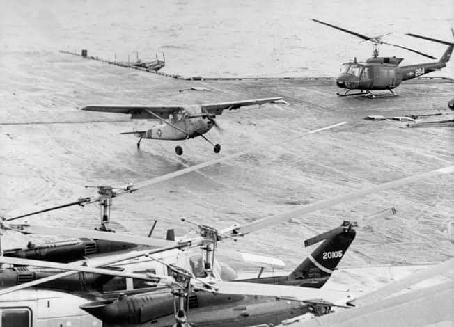 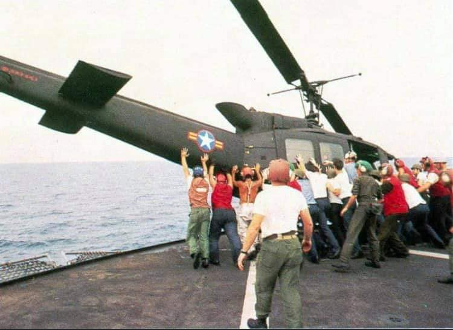 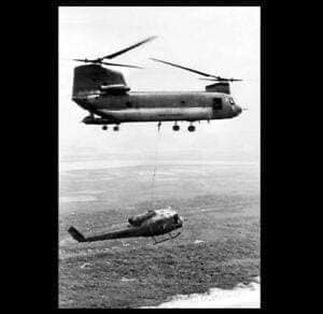
<탈출엔 시누크> 1975년 사이공 최후의 순간. 또다른 베트남 공군 소령 응우엔도 사이공 교외에 사는 가족을 탈출시키기 위해 남베트남 공군의 헬기 중 가장 큰 CH-47 Chinook을 훔쳐서 집으로 날아옴. 가족 뿐만 아니라 이웃도 잔뜩 태움. 영어를 못했던 응우엔은 미군에게 무전으로 도움을 요청하지 못하고 무작정 바다로 감. 다행히 Knox급 구축함 USS Kirk를 만남. 그러나 커크의 비행갑판에 내리기엔 시누크가 너무 컸기에 커크는 착함을 거부. 응우엔은 조종간을 잡고 저공비행하면서 손짓으로 의사전달. 그 결과 커크 갑판 4~5m 위에서 정지비행하면서 승객들이 뛰어내리고 승조원들이 받아냄. 마지막으로 응우엔은 커크 옆 바다에 불시착. 시누크는 뒤집히며 파손되었으나 응우엔도 무사히 구조됨. 2번째 사진 속 빨간 동그라미 속이 응우엔 소령. 미국에 도착한 응우엔 가족은 6개월만에 난민 지원 대상에서 자력으로 벗어나 독립.
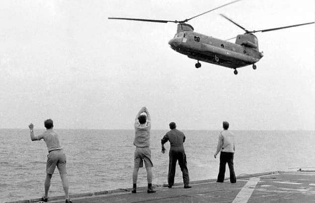 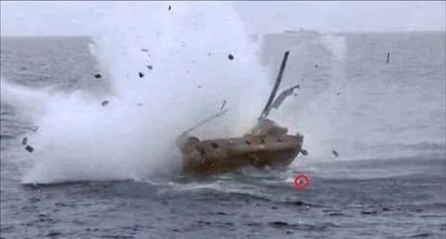
<함재기 F-5E> 1975년, USS Midway 위의 F-5E와 A-37 약 100대. 모두 사이공 함락 직전 태국으로 탈출한 남베트남 공군기들. 태국에서 괌으로 수송 중. 물론 크레인으로 실은 것. 저 비행기들은 괌까지 갔으나, 저 남베트남 공군 조종사들은 과연 태국에서 어디로 갔을지. 다 미국에서 받아줬을까? 그 가족들은 어떻게 되었을까?
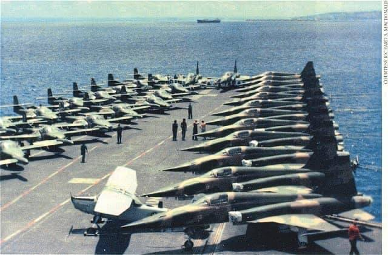
<시누크 건쉽> CH-47 Chinook가 AH-64 Apache보다 더 빠름. 그렇다면 그 크고 빠른 시누크에 장갑과 무장을 끼얹으면 어떨까? 실제로 ACH-47A gunship이 베트남전에서 사용 되었음. 4기가 프로토타입으로 만들어져 실전 투입되었는데 육군은 크게 만족. 그러나 양산화되지 않은 것은 2가지 이유 (1) 비용이 생각보다 많이 듬 (2) 수송용 헬기도 부족함. 4대중 3대가 추락했는데 그중 적의 대공포에 맞아 떨어진 것은 1대 뿐. 하나는 미군 기지에서 아군 헬기와 충돌하는 바람에, 다른 하나는 20mm 포의 고정핀이 부러지면서 20mm포가 자체 로터를 쏘아버리는 바람에... 적의 대공포에 맞아 떨어진 시누크는 무사히 착륙하여 승무원들 모두 탈출.
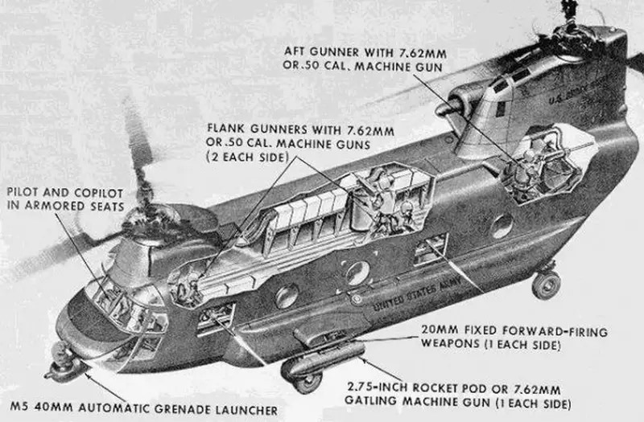 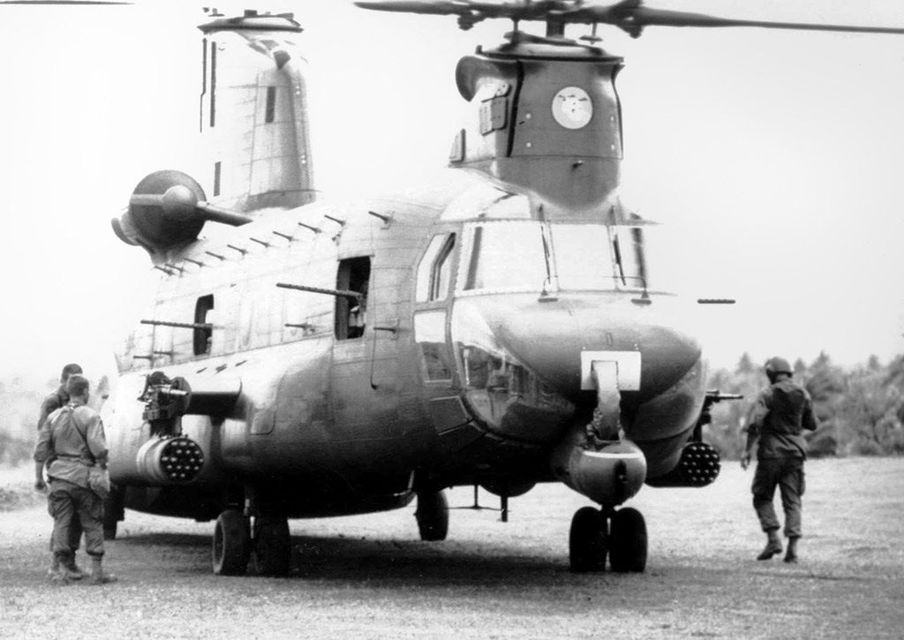
<베트남 전쟁의 군마> 나폴레옹 전쟁 당시 병사의 사상률은 10~20% 정도. 그러나 말은 40%가 넘음. 베트남 전쟁 동안 UH-1 Huey 헬기 총 7,013대가 사용되었고 그 중 절반 정도인 3,305대가 파괴됨. 조종사 1,074명 전사. 동승한 병사들 1,103명도 전사.
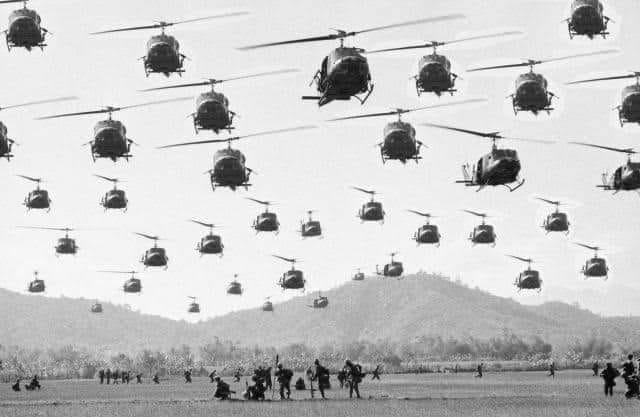
<대서양을 횡단한 최초의 회전익> 아래 사진은 월남전에서의 HH-3E "Jolly Green Giant"와 AD Skyraider 이 기종은 1967년 6월 세계 최초로 대서양을 건넌 회전익 항공기. 당시 2대의 헬기가 파리 에어쇼에 참여하기 위해 30시간 넘게 걸려 9번 재급유를 받아가며 대서양을 횡단. 그 2대 모두 베트남전에서 격추된 미공군 조종사들을 구출하는 공군 구조부대로 활약하다 결국 격추됨.
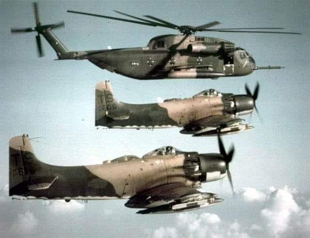
<국보가 된 MiG-21> MiG-21 4324번기는 2015년 베트남의 국보로 지정된 전설적 기체. 1967년부터 전선에 투입된 이 기체는 불과 7개월 동안 미군기 14기를 격추. 총 9명의 조종사가 이 기체를 거쳐갔는데 8명이 '인민 영웅' 칭호를 얻음. (나머지 1명은 마음의 상처가 컸을 듯) 1974년부터 하노이 군사 박물관에 전시 중.
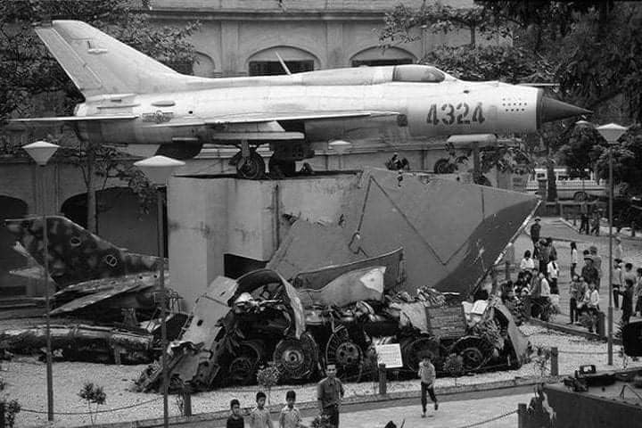 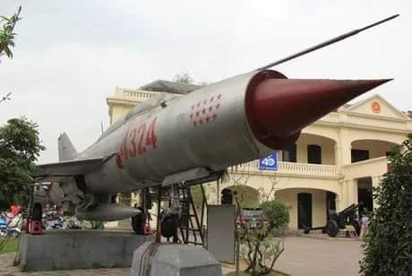
<Because I was inverted> 캄란만 기지로 복귀 중인 제557 전투비행단 소속 팬텀들. 양덕 댓글 중 하나. "There's always that one guy." ** 물론 영화 Top Gun(두번째 사진)보다 이 사진이 훨~씬 오래전에 나온 거임
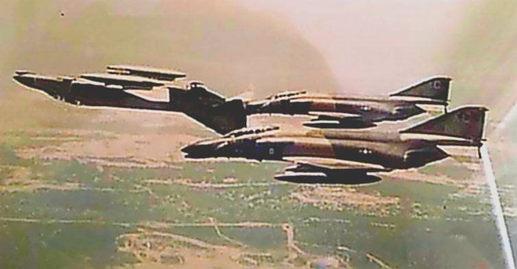 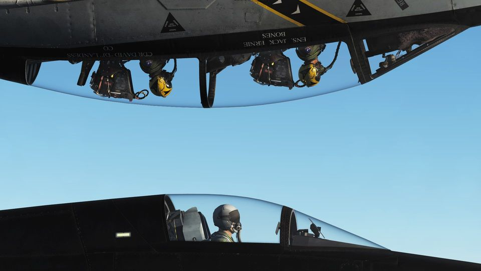
<핵폭탄 아님> F-105 Thunderchief에 장착된 M118 폭탄. 3천파운드 (약 1.3톤).
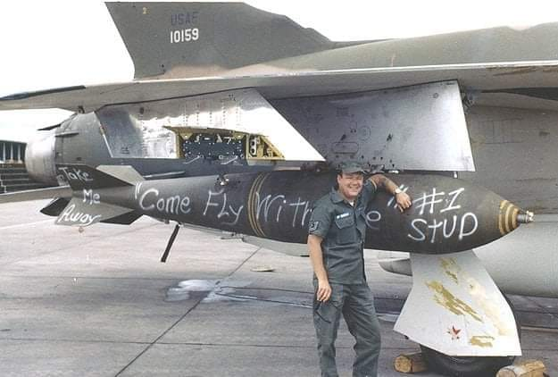